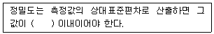
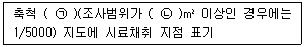
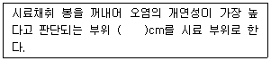
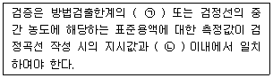
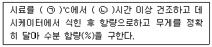
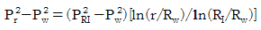
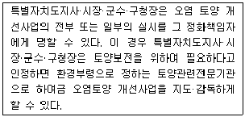
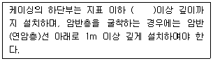

토양환경기사 (2020-09-26 기출문제)
1과목: 토양학개론
1. 벤젠이 포화토양층에 평형상태로 용해 또는 흡착되어 있다. 지하수와 토양에서 벤젠의 농도는 각각 10mg/L, 50mg/kg이며, 포화토양층의 부피는 2500m3, 토양공극률이 0.44, 토양입자밀도가 3.50g/cm3일 경우 지하수에 용해된 벤젠의 양(kg)은?
- 11
- 22
- 33
- 44
(정답률: 46%)

2. 나트륨 토양의 개량 방법이 아닌 것은?
- 지하수위가 높은 경우 배수에 의하여 수위를 낮춘다.
- 석회 자재를 투입하여 치환성 Ca포화도를 높인다.
- 제염 관개로 NaOH, NaHCO3, Na2CO3를 상층토로 이동시킨다.
- 내알칼리성, 내침수성 식물을 재배하여 유기질 잔사를 포장으로 환원시킨다.
(정답률: 71%)
3. 토양점토광물 중 2:1형 층상 구조를 갖는 광물(3층형 광물)에 해당하지 않은 것은?
- kaolinite
- illite
- montmorillonite
- vermiculite
(정답률: 72%)
4. 다환 방향족탄화수소(PAH)에 해당되지 않은 것은?
- 아세틸렌
- 나프탈렌
- 파이렌
- 페난트렌
(정답률: 59%)
5. 토양의 수직단면의 성층구조 중 B층에 관한 설명과 가장 거리가 먼 것은?
- 일반적으로 A층에 비하여 토층의 색이 밝다.
- 토괴의 표면에 점토피막이 형성되어 있기 때문에 구조의 발달을 볼 수 있다.
- 유기물층 바로 밑의 층으로 광물질이 풍부하다.
- 상부 토층으로부터 용탈된 철과 알루미늄 산화물, 고운 점토 등이 집적된다.
(정답률: 70%)
6. 산성비가 토양에 미치는 영향을 설명한 내용으로 가장 거리가 먼 것은?
- 토양으로부터 알루미늄의 용해도가 증가된다.
- 칼슘, 마그네슘 등 염기의 용출이 가속화 된다.
- 용해된 알루미늄은 식물에만 영향을 준다.
- 토양의 산성화가 촉진된다.
(정답률: 82%)
7. 토양의 pH가 높아지면서 용해도가 증가하는 원소는?
- 납
- 구리
- 카드뮴
- 몰리브덴
(정답률: 56%)
8. 토양 내의 미생물 중 세균에 비해 일반적으로 내산성이 강하고 산성토양에서 유기물 분해의 중요한 작용을 담당하며 토양 중에서 리그닌을 주로 분해하는 것은?
- 방선균
- 세균
- 사상균
- 조류
(정답률: 72%)
9. 토양생성의 주요 인자와 가장 거리가 먼 것은?
- 지형
- 토양 모재의 산화·환원 작용
- 인간을 포함한 생명체
- 시간
(정답률: 64%)
10. 지하수의 수리전도도가 2.0×10-3cm/sec이고, 공극비(e:void ratio)가 0.25일 때 지하수의 평균선형유속(cm/sec)은? (단, 동수구배=0.001, Darcy의 법칙 적용)
- 1.0 × 10-5
- 5.0 × 10-5
- 5.0 × 10-7
- 8.0 × 10-7
(정답률: 44%)
11. 토양공기에 관한 설명으로 옳지 않은 것은?
- 대기에 비하여 탄산가스의 함량(%)이 낮다.
- 대기에 비하여 상대습도(%)가 높다.
- 대기에 비하여 산소의 조성(%)이 낮다.
- 토양공기의 산소함량은 토심이 증가할수록 감소한다.
(정답률: 75%)
12. 생물농축에 관한 설명으로 가장 거리가 먼 것은?
- 생물농축은 먹이연쇄를 통해 이루어진다.
- 동물조직의 지방 함량은 화학물질의 생물 농축 경향을 결정짓는 데 중요한 인지이다.
- 미나마타병은 대표적인 생물농축에 의한 공해병이다.
- 농축계수란 유해물의 수중농도를 생물의 체내농도로 나눈 값이다.
(정답률: 72%)
13. 토양의 습윤단위질량이 1.75ton/m3이고, 함수비가 25%일 때 토양의 공극율(%)은? (단, 토양입자의 비중 = 2.65)
- 38.9
- 47.2
- 52.2
- 58.1
(정답률: 41%)
14. 토성(soil texture)의 결정에 사용되는 매체와 가장 거리가 먼 것은?
- 자갈(gravel)
- 모래(sand)
- 실트(silt)
- 점토(clay)
(정답률: 69%)
15. 단위체적의 대수층 내에 저유된 지하수와 대수층으로부터 외부로 뽑아낼 수 있는 지하수량과의 비를 나타내는 것은?
- 비양수율(specific reuse)
- 간극률(porosity)
- 비산출률(specific yield)
- 비보유율(specific retention)
(정답률: 70%)
16. 토양의 오염물질 정화메커니즘이 아닌 것은?
- 여과
- 희석
- 불용화
- 흡착 및 고정
(정답률: 57%)
17. 폐기물 매립지 토양에서 유기물 분해에 의한 혐기적 분해 산물은?
- 물
- 황화수소
- 이산화탄소
- 질산성 질소
(정답률: 56%)
18. 토양수의 압력이 31bars일 경우 pF로 환산하면 얼마가 되는가?
- 약 3.4
- 약 3.7
- 약 4.1
- 약 4.5
(정답률: 43%)
19. 오염물의 지하수로 포화된 토양 내 이동을 지배하는 메커니즘 중 지하수의 수두차와 이동지점간 거리에 관련된 것은?
- 수리분산
- 확산
- 이송
- 흡착
(정답률: 60%)
20. 토양시료 2kg 중 부식질이 6%, 점토가 15%, 실트가 10%를 차지하고 있으며, 이들 물질의 양이온교환용량은 부식질이 150cmloe/kg, 점토가 70cmole/kg, 실트가 15cmole/kg이었다. 이 토양의 양이온교환용량(cmole/kg)은?
- 9.75
- 10.5
- 19.5
- 21.0
(정답률: 48%)
2과목: 토양 및 지하수 오염조사기술
21. 유기인화합물을 기체크로마토그래피로 측정할 때 정밀도(% RSD)기준으로 ( )에 옳은것은? (단, 정도보증/정도관리에 따라 산정)

- 5%
- 10%
- 20%
- 30%
(정답률: 50%)
22. 토양시료 중 BTEX 시료보관에 관한 기준으로 적절한 것은?
- 시험관에 채취된 시료를 즉시 실험할 수 없는 경우에는 0~4℃ 냉암소에서 보관하고 7일 이내 분석해야 한다.
- 시험관에 채취된 시료를 즉시 실험할 수 없는 경우에는 0~4℃ 냉암소에서 보관하고 14일 이내 분석해야 한다.
- 시험관에 채취된 시료를 즉시 실험할 수 없는 경우에는 질산을 주입하여 pH 2이하에서 보관하고 7일 이내 분석해야 한다.
- 시험관에 채취된 시료를 즉시 실험할 수 없는 경우에는 질산을 주입하여 pH 2이하에서 보관하고 14일 이내 분석해야 한다.
(정답률: 60%)
23. 토양오염 정밀조사결과보고서에 수록되는 시료채취 지점도 및 오염분포도에 표기되어 있는 축척에 관한 설명으로 ( )에 알맞은 것은?

- ㉠ 1/500, ㉡ 20000
- ㉠ 1/2500, ㉡ 20000
- ㉠ 1/500, ㉡ 40000
- ㉠ 1/2500, ㉡ 40000
(정답률: 51%)
24. 토양오염관리대상시설지역에서 시료의 채취 및 보관에 관한 설명으로 ( )에 옳은 것은? (단, 봉이 들어있는 타격식, 나선식 토양시추 장비 기준)

- ±5
- ±10
- ±15
- ±30
(정답률: 66%)
25. 불소의 정량을 위한 시험방법으로 옳은 것은?
- 기체크로마토그래피법
- 자외선/가시선 분광법
- 원자흡수분광광도법
- 유도결합플라스마-원자발광분광법
(정답률: 67%)
26. 수소이온농도(유리 전극법) 측정 시 간섭물질 및 간섭에 관한 설명으로 옳지 않은 것은?
- 토양을 오랫동안 방치하면 미생물의 작용으로 탄산가스가 발생하여 pH가 낮아질 수 있다.
- pH 11 이상의 시료는 오차가 크게 발생할 수 있으므로 오차가 적은 특수전극을 사용한다.
- 유리전극은 일반적으로 용액의 탁도, 콜로이드성 물질들에 의해 간섭을 받는다.
- 유리전극을 넣을 때 토양현탁을 만들어 주고 곧 넣어서 측정한다.
(정답률: 66%)
27. 6가 크롬(자외선/가시선 분광법) 측정에 관한 설명으로 옳은 것은?
- 청색의 착화합물의 흡광도를 460nm에서 측정
- 청색의 착화합물의 흡광도를 540nm에서 측정
- 적자색의 착화합물의 흡광도를 460nm에서 측정
- 적사색의 착화합물의 흡광도를 540nm에서 측정
(정답률: 68%)
28. 정도보증/정도관리에 관한 내용 중 검정곡선의 검증에 관한 내용으로 ( )에 옳은 것은?

- ㉠ 5배~50배, ㉡ 10%
- ㉠ 5배~50배, ㉡ 25%
- ㉠ 2배~10배, ㉡ 10%
- ㉠ 2배~10배, ㉡ 25%
(정답률: 53%)
29. 불소표준원액의 농도는 1000μg F-/mL, 불소표준원액 10mL를 정확히 취하여 물을 넣어 정확히 100mL로 했을 때 이 용액의 농도(μg F-/mL)는?
- 1000
- 100
- 10
- 1
(정답률: 55%)
30. 눈금간격 0.75mm의 표준체로 체거름한 시료를 분석용 시료로 사용하는 것은?
- 카드뮴
- 아연
- 불소
- 수은
(정답률: 60%)
31. 오염개연성이 확인된 산업단지에 대한 토양환경평가 개황조사 계획을 수립하고자 한다. 조사면적에 대한 시료채취 지점수량 선정이 잘못된 것은?
- 면적(m2) : 400, 최소 지점수(개) : 4
- 면적(m2) : 600, 최소 지점수(개) : 6
- 면적(m2) : 1400, 최소 지점수(개) : 7
- 면적(m2) : 2800, 최소 지점수(개) : 8
(정답률: 59%)
32. 저장물질이 없는 누출검사대상시설에 대한 비파괴검사시험법 중 초음파 두께측정을 하려고 한다. 옥외저장시설의 측정지점에 관한 내용 중 틀린 것은?
- 에뉼러판 : 옆판내면으로부터 탱크중심방향으로 0.5m 간격마다의 범위에서 원주방향으로 2m 이하의 간격마다 1개 지점
- 누설자장 등을 이용하여 점검을 실시한 밑판 및 에뉼러판 : 1매당 2개 지점
- 밑판(구형탱크는 본체전부를 밑판으로 보며, 지중탱크의 옆판 중 지반면 하에 매설된 부분은 밑판으로 본다.) : 1매당 3개 지점
- 보수 중 덧붙인 판 또는 교체한 판 : 1매당 1개 지점
(정답률: 59%)
33. 토양오염관리대상시설지역의 지상저장시설에서 시료채취지점 선정 방법으로 옳은 것은?
- 저장시설의 끝단으로부터 수평방향으로 1m이내의 거리에서 수행한다.
- 저장시설 끝단으로부터의 이격거리의 2배 깊이까지로 한다.
- 방유조 외부에서 시료를 채취할 경우 방유조 끝단을 기준으로 한다.
- 토양오염물질의 누출이 인지되거나 오염의 개연성이 높은 4개 지점을 선정한다.
(정답률: 57%)
34. 분석장치의 순서가 ‘시료도입부 – 고주파 전원부 – 광원부 – 분광부 – 연산처리부 – 기록부’로 구성된 장치는?
- 자외선/가시선 분광법
- 원자흡수분광광도법
- 기체크로마토그래피법
- 유도결합플라스마-원자발광분광법
(정답률: 53%)
35. 총칙의 내용 중 온도에 관한 설명으로 옳지 않은 것은?
- 열수 : 약 100℃
- 냉수 : 15℃ 이하
- 온수 : 50℃ ~ 60℃
- 찬 곳 : 따로 규정이 없는 한 0℃ ~15℃
(정답률: 73%)
36. 저장물질이 없는 누출검사대상시설의 가압시험법에서 “안정된 시험압력”이라 함은 가압 후 유지시간 동안 압력강하가 시험압력의 몇 %이하인 압력을 말하는가?
- 2
- 3
- 5
- 10
(정답률: 65%)
37. 기체크로마토그램의 분석에 사용하는 검출기 중 페놀, 총석유계탄화수소(TPH), BTEX 등의 분석에 활용도가 높은 검출기는?
- 전자포획형검출기(ECD)
- 불꽃이온화검출기(FID)
- 열전도도검출기(TCD)
- 광이온화검출기(PID)
(정답률: 66%)
38. 자외선/가시선 분광법을 이용하여 6가 크롬의 측정 시 발색을 방해하는 성분은?
- 잔류염소
- 잔류망간
- 잔류질소
- 잔류산소
(정답률: 71%)
39. 수분함량 측정에 대한 설명 중 ( )에 알맞은 내용은?

- ㉠ 150 ~ 155, ㉡ 8
- ㉠ 150 ~ 155, ㉡ 4
- ㉠ 1⑤ ~ 110, ㉡ 8
- ㉠ 1⑤ ~ 110, ㉡ 4
(정답률: 63%)
40. 원자흡수분광광도법에 대한 설명으로 틀린 것은?
- 이 시험방법은 빛이 시료용액 중을 통과할 때 흡수나 산란 등에 의하여 강도가 변화하는 것을 이용한 것이다.
- 시료 중의 목적성분을 정량하기 위해 파장 200~900nm에서 액체의 흡광도를 측정한다.
- 원자흡수분광광도법은 일반적으로 광원에서 나오는 빛을 다색화장치 등을 통과하게 하여 넓은 파장범위의 빛을 이용한다.
- 투사광과 입사광의 강도는 램버어트비어(Lambert-Beer)의 법칙에 따른다.
(정답률: 58%)
3과목: 토양 및 지하수 오염정화 기술
41. 미생물은 크게 탄소원과 에너지원에 따라 분류되는데 탄소원이 유기탄소이며 에너지원으로 유기물의 산화환원반응을 이용하는 미생물은?
- 화학합성 종속영양 미생물
- 화학합성 자가영양 미생물
- 광합성 종속영양 미생물
- 광합성 자가영양 미생물
(정답률: 68%)
42. 고형화/안정화된 폐기물의 위해성을 평가하기 위한 용출능평가실험 방법으로 인조산성 강우액을 이용하여 물체로부터 연속적으로 오염물을 추출하는 방법은?
- TCLP(toxicity characteristic leaching procedure) 시험법
- MEP(multiple extraction procedure) 시험법
- EP-TOX(extraction procedure toxicity) 시험법
- MWEP(monofill waste extraction procedure) 시험법
(정답률: 54%)
43. 오염토양에 원위치(In-situ) 생물학적 분해법을 적용하는 경우, 호기성보다 혐기성 상태에서 분해하기 쉬운 토양 오염물은?
- 톨루엔(toluene)
- 벤젠(benzene)
- 크실렌(xylene)
- TCE(trichloroethylene)
(정답률: 59%)
44. 페놀로 오염된 지하수를 과산화수소(H2O2)와 철 촉매(Fe2+)를 사용하여 처리하고자 한다. 예비실험결과99% 제거 시 과산화수소와 철의 필요량이 2.5(g H2O2/g phenol), 0.⑤(mg Fe2+/mg H2O2)임을 알았다. 오염현장의 페놀의 오염농도가 6000mg/L이고 추출된 지하수의 유량이 20000L/day 일 때 필요한 철 촉매(Fe2+)의 양(kg/day)은? (단, 비중=1.0, 페놀 제거율 99% 기준)
- 약 15
- 약 20
- 약 25
- 약 30
(정답률: 32%)
45. 토양세척공정에 관한 내용으로 옳은 것은?
- 외부환경의 조건변화에 대한 영향이 큰 공정이다.
- 처리 효율은 높으나 적용 가능한 오염물의 범위가 좁다.
- 자체적인 조건조절이 가능한 폐쇄형 공정이다.
- 오염토양의 부피감소 시간이 길다.
(정답률: 65%)
46. 토양증기추출기법 시스템의 단점으로 틀린 것은?
- 토양층이 치밀하여 기체 흐름이 어려운 곳에서는 사용이 곤란하다.
- 오염물질의 독성은 변화가 없다.
- 굴착공정으로 인하여 설치기간이 비교적 길다.
- 지반구조의 복잡성으로 총 처리시간을 예측하기가 어렵다.
(정답률: 51%)
47. 지중 생물학적 처리 공정의 4가지 반응 메커니즘에 속하지 않은 것은?
- 공동대사
- 수화반응
- 호기반응
- 혐기반응
(정답률: 61%)
48. 열탈착법에 관한 설명으로 틀린 것은?
- 가소성이 높은 토양은 스크린 및 장비에 엉겨 붙어 운영에 지장을 초래할 수 있다.
- 20% 이상 수분을 포함하는 토양은 건조 및 탈수 후 처리하여야 한다.
- 1100kcal/kg보다 높은 열량을 가진 토양은 처리 전 일반토양과 섞어 처리하여야 한다.
- 소요에너지 계산을 위해서 토양의 가밀도, 토성 및 토양의 증발열 자료가 필요하다.
(정답률: 29%)
49. 바이오벤팅 기술을 적용할 때, 평균 산소 소모율(%O2/day)은? (단, 주입공기유량 100m3/day, 초기산소농도 21%, 배기가스 중의 산소농도 3%, 토양체적 1000m3, 토양공극률 0.2)
- 3
- 4
- 6
- 9
(정답률: 53%)
50. 오염물질 차단(containment)기술 중 기중 차단벽 공정의 종류와 가장 거리가 먼 것은?
- Biopile
- Slurry wall
- Grout
- Steel sheet pile
(정답률: 60%)
51. 토양증기추출정으로부터 10m 거리(r)에 떨어진 관측정의 압력(Pr)을 측정하여 계산한 영향반경(RI)의 거리 (m)는? (단, 추출정 압력 Pw=0.9atm, Pr=0.98atm, 영향반경 지점의 압력 PRI=0.999atm, 추출정 반경 Rw=50mm)

- 32.8
- 34.3
- 37.6
- 38.7
(정답률: 44%)
52. 기름의 입경 0.2mm, 기름의 비중 0.94g/cm3, 물의 비중 1g/cm3, 물의 점성도 0.01g/cm-sec 일 때 기름의 부상속도(cm/min)는? (단, Stokes 법칙 이용)
- 5.84
- 6.84
- 7.84
- 8.84
(정답률: 44%)
53. 지하수 오염원에서 자연저감이 일어나고 있다면 배경보다 낮은 값을 나타내는 것은?
- 질산염
- 2가 철
- 망간
- 알칼리도
(정답률: 48%)
54. 토양증기추출법을 적용했을 때 상대적으로 처리 효율이 가장 높은 물질은?
- PCBs
- 중금속
- 다이옥신
- 준휘발성 유기물질
(정답률: 57%)
55. 식물정화법 대상 오염물질 중에서 식물에 의한 안정화에 영향을 받는 물질이 아닌 것은?
- 유기인화합물
- 중금속
- 방향족 탄화수소
- 할로겐화 방향족 탄화수소
(정답률: 50%)
56. 매립지 최종 복토층의 가스 배체층 설치에 따른 이점으로 틀린 것은?
- 상부 식생대층의 식물 및 미생물에 대한 독성 영향을 저감시킨다.
- 가스압에 의한 차수층의 균열발생의 위험성을 감소시킨다.
- 매립가스를 포집하여 에너지원으로 사용할 수 있다.
- 매립가스의 지속적 대기 배출로 신속한 매립지의 안정화를 기한다.
(정답률: 60%)
57. PCE로 오염된 지하수를 양수하여 포기조 내에서 공기분산법으로 제거할 때 포기조의 부피가 100m3인 처리장에 1일 400m3의 오염지하수가 유입된다면 포기시간(hr)은?
- 0.25
- 6
- 8
- 12
(정답률: 57%)
58. 자연저감과정 중 산화환원포텐셜값이 가장 높은 조건에서 일어나는 것은?
- 황산염 환원
- 메탄산화
- 3가철 환원
- 호기성산화
(정답률: 48%)
59. 열탈착 기술에서 오염물질의 특성에 따른 탈착 속도에 대한 설명으로 틀린 것은?
- 유기물질의 분자량이 클수록 탈착속도가 빠르다.
- 토양층의 깊어질수록 탈착속도는 감소한다.
- 유기물질의 휘발성이 작을수록 탈착속도가 느리다.
- 비공극성 입자의 경우 탈착속도는 초기에 크고 빠르게 일어난다.
(정답률: 66%)
60. 공기분사법(air sparging)의 적용에 관한 설명으로 옳지 않은 것은?
- 오염물질의 휘발성이 작으면 정화효율이 낮다.
- 오염확산의 위험이 적은 피압대수층에 적용이 용이하다.
- 공기주입으로 인한 기질의 변화로 주변 구조물의 안정성에 영향을 줄 수 있다.
- 오염물질의 호기성 생분해능이 높을수록 적용이 유리하다.
(정답률: 50%)
4과목: 토양 및 지하수 환경관계법규
61. 토양오염검사에 대한 설명이 잘못된 것은?
- 특정토양오염관리대상시설의 설치자는 대통령령으로 정하는 바에 따라 토양관련 전문기관으로부터 그 시설의 부지 및 그 주변지역에 대하여 토양오염검사를 받아야 한다.
- 토양오염검사는 토양오염도검사 및 누출검사로 구분하여 실시한다.
- 누출검사는 저장시설 또는 배관이 땅속에 묻혀 있거나 땅에 붙어 있어 누출여부를 눈으로 확인할 수 없는 시설로서 환경부령으로 정하는 바에 따라 실시한다.
- 토양시료의 채취가 불가능하거나 토양오염검사가 필요하지 아니하여 토양관련전문기관으로부터 승인을 얻어 토양오염검사를 받지 아니할 수 있다.
(정답률: 41%)
62. 다음 용어의 정의로 틀린 것은?
- 토양정화업 : 오염된 토양을 정화하는 업으로서 환경부령으로 정하는 것을 말한다.
- 토양정화 : 생물학적 또는 물리적·화학적 처리 등의 방법으로 토양 중의 오염물질을 감소, 제거하거나 토양중의 오염물질에 의한 위해를 완화하는 것을 말한다.
- 특정토양오염관리대상시설 : 토양을 현저하게 오염시킬 우려가 있는 토양오염관리대상시설로서 환경부령으로 정하는 것을 말한다.
- 토양오염물질 : 토양오염의 원인이 되는 물질로서 환경부령으로 정하는 것을 말한다.
(정답률: 53%)
63. 토양보전기본계획을 수립할 때 포함되어야 할 사항과 가장 거리가 먼 것은?
- 토양정화 및 정화된 토양의 이용에 관한 사항
- 토양정화를 위한 기술인력의 교육 및 양성에 관한 사항
- 토양보전에 관한 시책방향
- 토양오염의 정화 및 복원 현황
(정답률: 47%)
64. 토양환경보전법의 목적이 아닌 것은?
- 토양오염물질의 발생을 최대한 억제
- 토양을 적정하게 관리·보전함으로써 토양생태계를 보전
- 자원으로서의 토양가치를 높임
- 모든 국민이 건강하고 쾌적한 삶을 누릴 수 있게 함
(정답률: 66%)
65. 수질검사대상이 되는 공업용수용 지하수 양수 규모 기준은?
- 1일 양수능력이 30톤 이상인 경우
- 1일 양수능력이 50톤 이상인 경우
- 1일 양수능력이 60톤 이상인 경우
- 1일 양수능력이 100톤 이상인 경우
(정답률: 57%)
66. 다음 중 정화책임자로 볼 수 없는 경우는?
- 토양오염물질의 누출·유출·투기·방치 또는 그 밖의 행위로 토양오염을 발생시킨 자
- 토양오염의 발생 당시 토양오염의 원인이 된 토양오염관리대상시설의 소유자·점유자 또는 운영자
- 합병·상속이나 그 밖의 사유로 토양오염관리 대상시설의 권리·의무를 포괄적으로 승계한 자
- 해당 토지를 소유 또는 점유하고 있는 중에 토양오염이 발생한 경우로서 자신이 해당 토양오염 발생에 대하여 귀책 사유가 없는 경우
(정답률: 75%)
67. 특별자치도지사·시장·군수·구청장은 환경부령으로 정하는 바에 따라 특정토양오염관리대상시설의 설치자에게 감독상 필요한 자료의 제출을 명할 수 있으며 소속 공무원으로 하여금 특정토양오염관리대상시설에 출입하여 토양오염방지시설의 설치, 토양오염검사 및 그 결과의 보전여부 등을 검사하게 할 수 있다. 이에 따른 공무원의 출입·검사를 거부·방해 또는 기피한 자에 대한 과태료 기준은?
- 200만원 이하의 과태료
- 300만원 이하의 과태료
- 500만원 이하의 과태료
- 1000만원 이하의 과태료
(정답률: 50%)
68. 다음에서 언급한 ‘환경부령으로 정하는 토양관련전문기관’으로 옳은 것은?

- 농촌진흥청
- 한국환경공단
- 국립환경과학원
- 시·도 보건환경연구원
(정답률: 64%)
69. 지하수오염방지시설의 설치기준 중 상부보호공을 설치하는 지하수오염방지시설의 세부 설치기준으로 ( )에 맞는 내용은?

- 10m
- 5m
- 3m
- 2m
(정답률: 55%)
70. 토양오염 측정에 관한 설명으로 틀린 것은?
- 환경부장관은 전국적인 토양오염실태를 파악하기 위해 측정망을 설치한다.
- 전국토를 일정단위 구획하여 설치하되 측정지점의 수는 고정한다.
- 시·도지사 또는 시장·군수·구청장은 토양오염이 우려되는 해당 지역에 대하여 토양 오염실태를 조사하여야 한다.
- 시·도지사는 구청장이 보고한 토양오염실태조사와 결과를 환경부장관에게 보고하여야 한다.
(정답률: 67%)
71. 토양보전대책에 관한 계획에 포함되어야 하는 사항과 가장 거리가 먼 것은?
- 토지 등의 이용 방안
- 피해주민에 대한 지원 대책
- 오염토양 개선사업
- 토양오염 방지 대책
(정답률: 33%)
72. 위해성평가를 하려는 자가 위해성평가 대상지역의 특성을 고려하여 위해성평가 계획서에 포함하여야 하는 사항과 가장 거리가 먼 것은?
- 현장조사 방법
- 오염물질의 노출경로
- 오염범위 및 노출농도
- 독성평가 자료
(정답률: 36%)
73. 특정토양오염관리대상시설 설치현황 등의 보고 시 제출해야 하는 자료가 아닌 것은?
- 특정토양오염관리대상시설 운영계획
- 토양오염검사 결과
- 조치명령 및 조사 결과의 내용
- 특정토양오염관리대상시설 설치 현황
(정답률: 29%)
74. 토양보전대책지역 지정표지판에 표시되는 내용으로 가장 거리가 먼 것은?
- 지정사유
- 지정목적
- 지정일자
- 토양보전대책지역안에서 제한되는 행위
(정답률: 47%)
75. 토양환경보전을 위한 주민건강피해조사 및 대책의 내용에 포함되어야 하는 사항이 아닌 것은?
- 건강피해조사의 대상 및 방법
- 건강피해 전문가 목록
- 건강피해조사 기관
- 건강피해의 판정 및 대책
(정답률: 69%)
76. 오염토양의 정화에 대한 내용으로 잘못된 것은?
- 오염토양은 대통령령으로 정하는 정화기준 및 정화방법에 따라 정화하여야 한다.
- 오염토양은 법에서 정하는 규정에서 의하여 토양정화업의 등록을 한 자에게 위탁하여 정화하여야 한다.
- 오염토양을 정화할 떄에는 오염이 발생한 해당 부지에서 정화하여야 한다.
- 오염토양을 정화하는 자는 오염토양에 비오염 토양을 섞어서 오염농도 및 위해성을 저감할 수 있다.
(정답률: 62%)
77. 대통령령으로 정하는 토양오염조사기관이 아닌 기관은?
- 한국환경공단
- 국립환경과학원
- 국립산림과학원
- 시·도 보건환경연구원
(정답률: 59%)
78. 지하수의 수질보전을 위하여 수질측정망 설치 및 수질오염실태 측정 계획을 수립·고시하여야 하는 자는?
- 환경부장관
- 국토교통부장관
- 농림축산식품부장관
- 시·도지사
(정답률: 64%)
79. 지하수 수질측정기록부는 최종 기재한 날로부터 몇 년간 보존하여야 하는가?
- 1년
- 2년
- 3년
- 5년
(정답률: 49%)
80. 특정토양오염관리대상시설 설치현황 등의 보고와 관련하여 시장·군수·구청장이 환경부령에 따라 매년 1월말까지 시·도지사에게 제출하여야 하는 자료가 아닌 것은?
- 특정토양오염관리대상시설 설치 현황
- 규정에 따라 통보받은 토양오염검사 결과
- 규정에 따른 조치명령 및 조사 결과의 내용
- 규정에 따른 토양정화검증결과
(정답률: 43%)
포화토양층의 부피 = 2500 m3
토양공극률 = 0.44
토양입자밀도 = 3.50 g/cm3 = 3500 kg/m3
따라서, 포화토양층의 질량은 다음과 같다.
2500 m3 x 0.44 x 3500 kg/m3 = 3,080,000 kg
포화토양층에 있는 벤젠의 질량은 다음과 같이 구할 수 있다.
50 mg/kg x 3,080,000 kg = 154,000 g = 154 kg
따라서, 지하수에 용해된 벤젠의 양은 10 mg/L x 2500 m3 = 25,000 g = 25 kg 이다.
정답은 11이다.